🖼 Login screen — empty
🖼 Login screen — empty
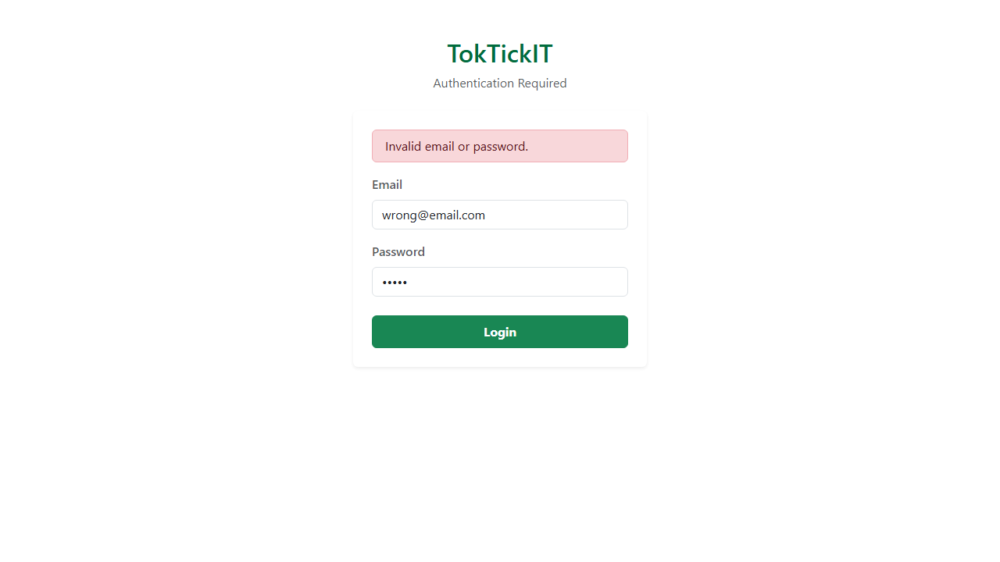
🖼 Login screen — invalid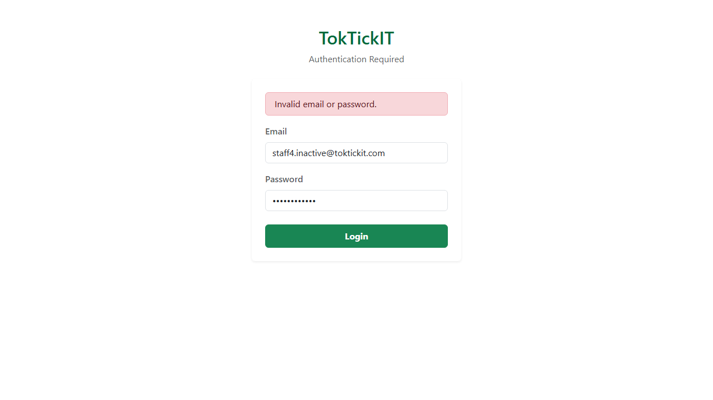
🖼 Inactive account error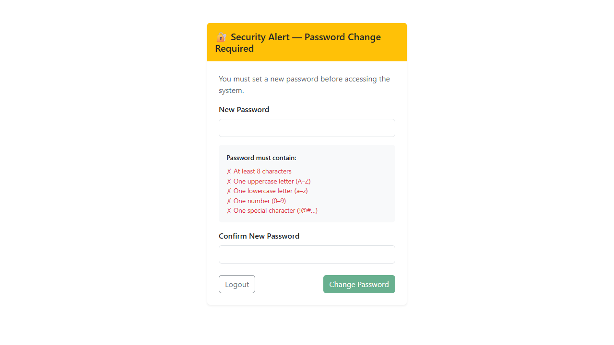
🖼 Mandatory password change screen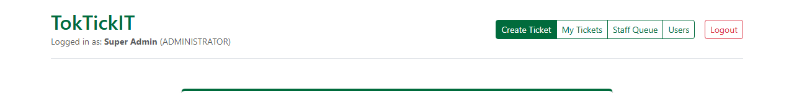
🖼 Authenticated shell showing user + roleSemester 1/2026 · Sections 1, 2, HS, 31, 32
Student Name: Aphiwat Panthathanaphat Student ID: 67070507209
Repository: https://github.com/apfirst13/toktickit
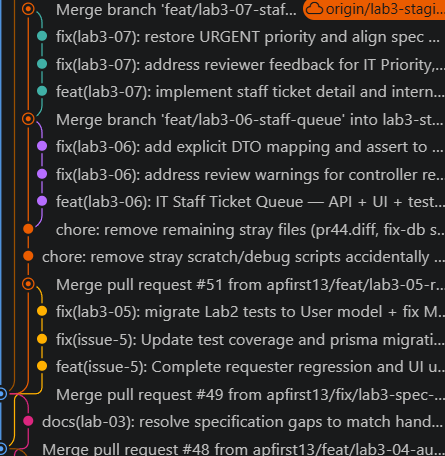
Git Graph showing clean staircase of lab3-stagingspecification.md / ภาพหน้าจอของไฟล์ Spec / ภาพประวัติ Commit ที่ยืนยันว่าเขียน Spec ก่อนโค้ดจริง
tests.md / ตาราง Traceability / รัน npm test และ npx playwright test แล้วแคปผลลัพธ์ว่า Pass 100%
ai-use.md ที่มี 6-10 Prompts และเขียน Reflection สั้นๆ (ไฟล์นี้ผมเตรียมให้แล้ว แค่เปิดแล้วแคปมาแปะ)
🖼 Login screen — empty

🖼 Login screen — invalid
🖼 Inactive account error
🖼 Mandatory password change screen
🖼 Authenticated shell showing user + role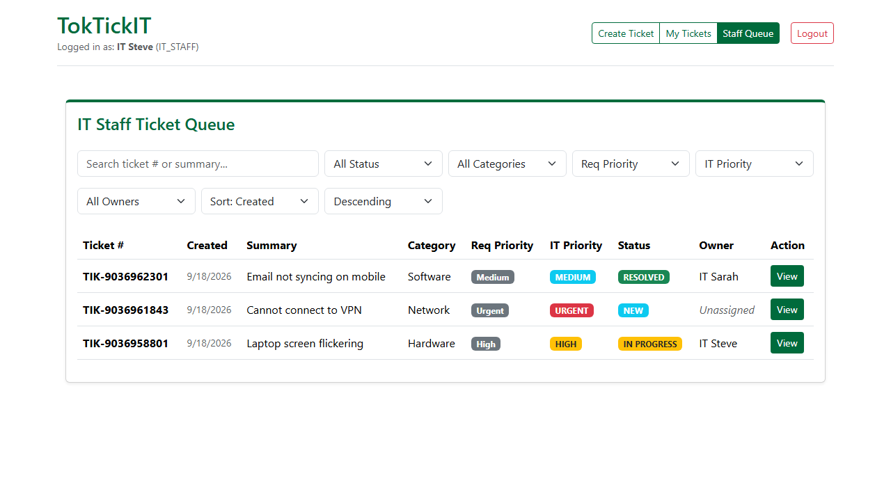
🖼 Queue — desktop table view with real data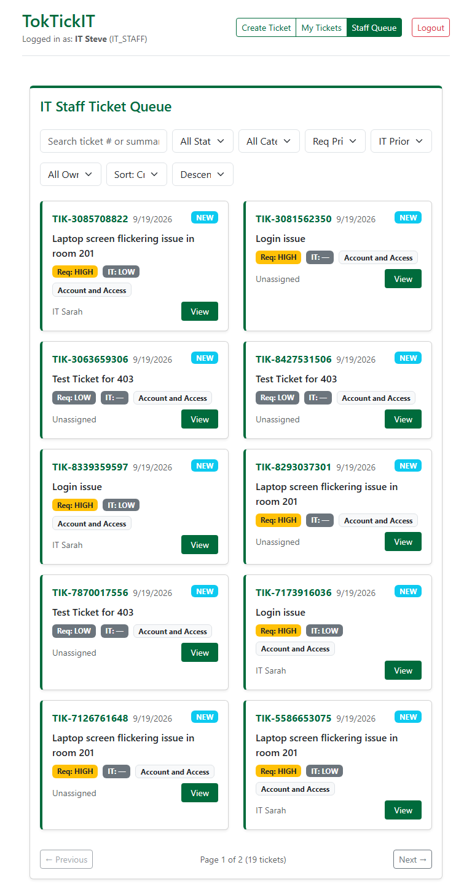
🖼 Responsive — tablet and mobile card view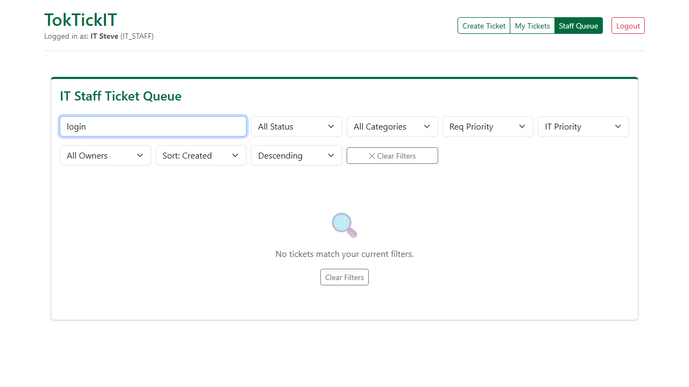
🖼 Search / filter / sort in action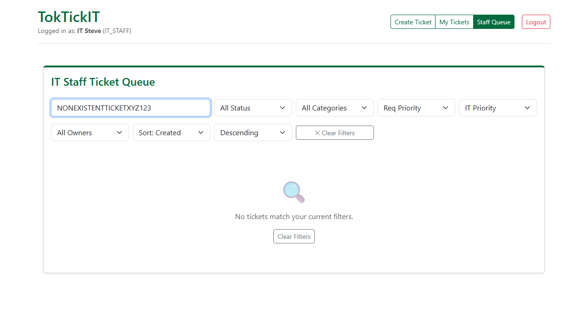
🖼 Empty state and no-results state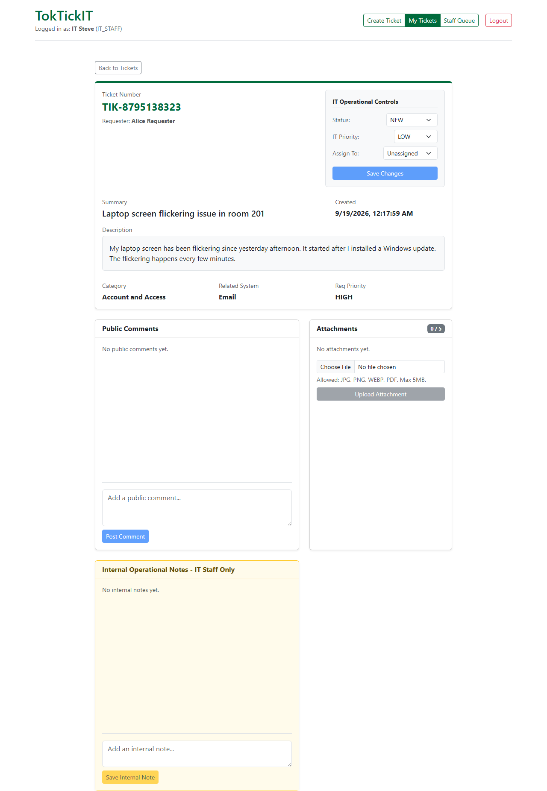
Attachments are visible and downloadable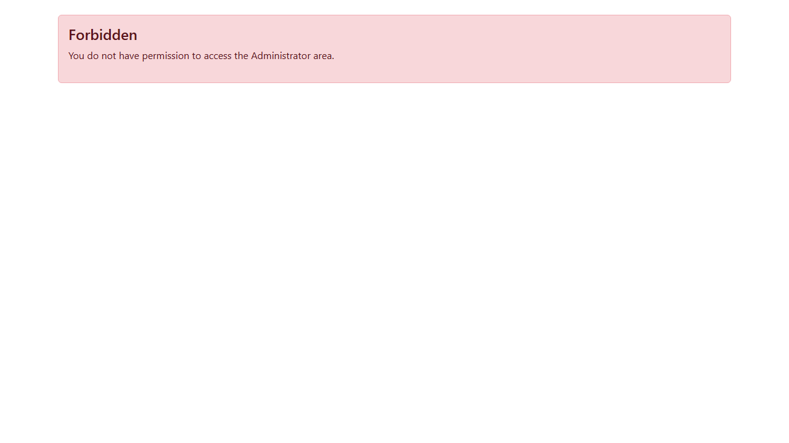
API authorization evidence (403 Forbidden shown in UI when access is denied)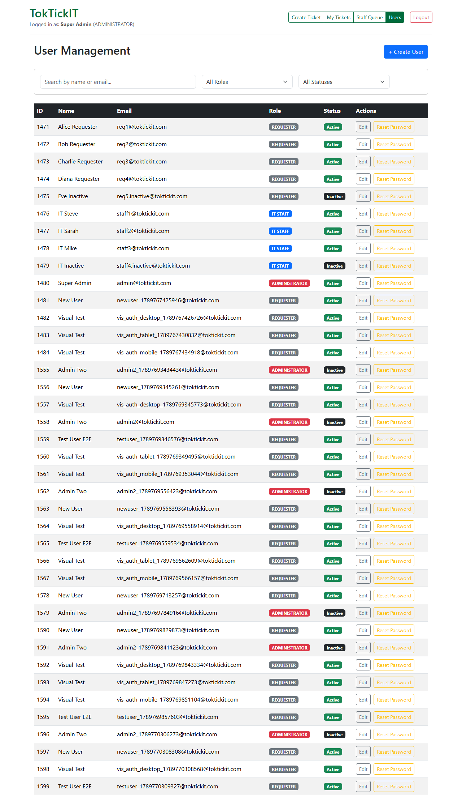
🖼 User list + search/filter 🖼 Create / Edit user form + validation errors
🖼 Create / Edit user form + validation errors
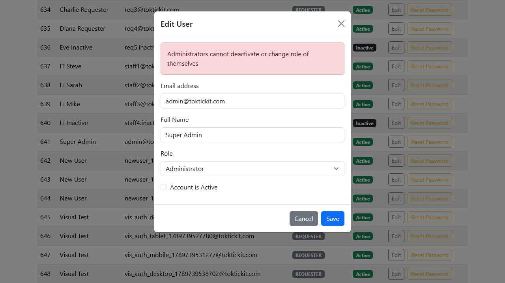
🖼 Self-deactivation and last-admin guard blocked (Error Toast)ui-spec.md และกากบาท Visual Checklist (รูป 3 ขนาด Desktop, Tablet, Mobile ผมเอาใส่ให้ครบหมดแล้ว!)
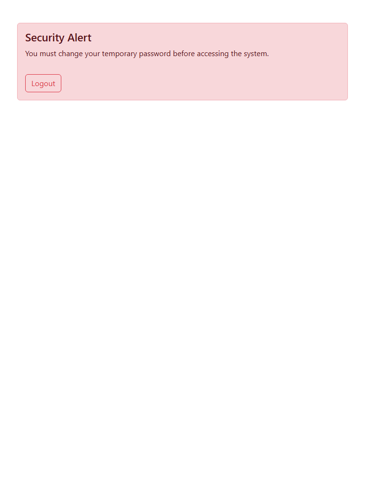
🖼 All major screens — Tablet (768–991px)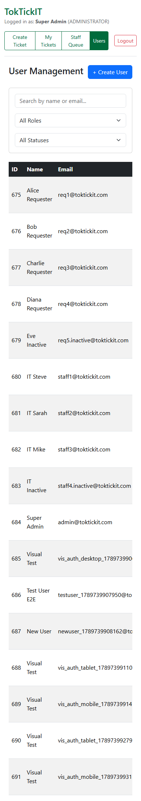
🖼 All major screens — Mobile (<768px)